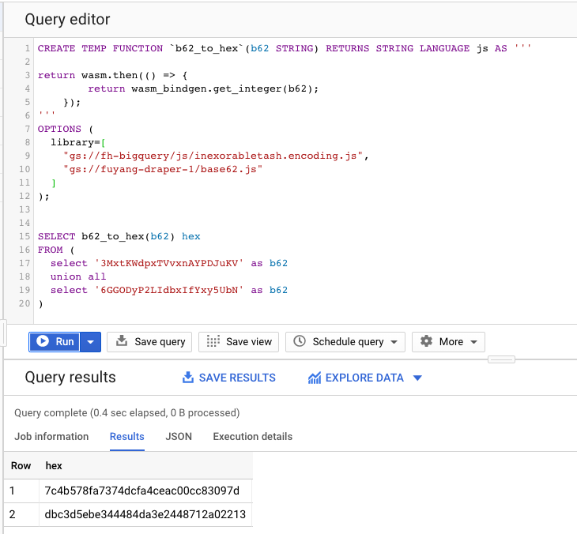

Using Rust/Wasm code to do base62 encoding and decoding
Try change value below and you can see base62 function gets called.
This base62 function is written in Rust and code can be seen here.
The Rust/Wasm code can be seen in this repo.
B62 to Hex
B62:
Hex: Hex will be shown here
Hex to B62
Hex:
B62: B62 will be shown here
And this is what it looks like if you upload base62.js and use it in BigQuery as a user defined function
